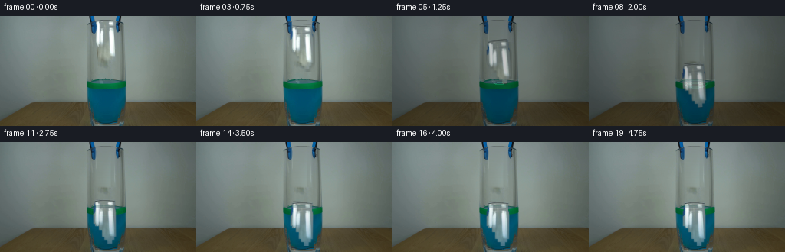
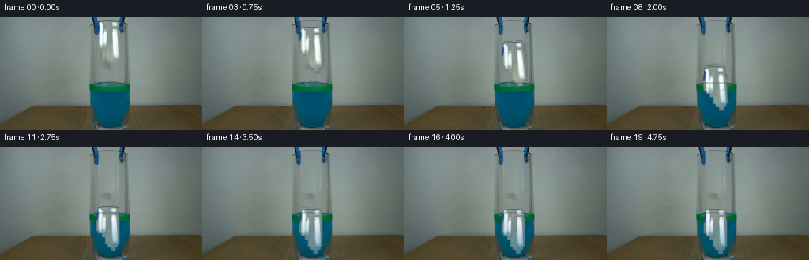
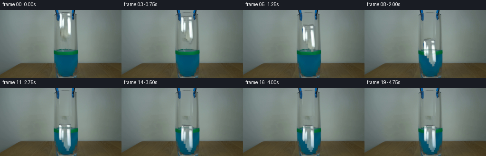
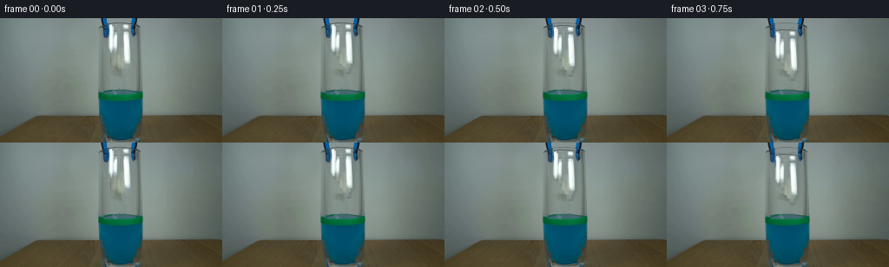

CODING AGENTS AS PIXEL WORLD MODELS
traex/DeepSeek-V4.1-Flash · 0137
点击播放 · 原生 RGB 像素
逐轮保存的候选
回放视频、检查图与代码变化。
每份候选均可单独播放。实际图片检查记录在下方工具轨迹中。
候选 01播放与检查图
点击播放 · 原生 RGB 像素

展开代码变化
--- 上一保存版本
+++ 本次保存版本
@@ -0,0 +1,280 @@
+from pathlib import Path
+
+import cv2
+import numpy as np
+from PIL import Image
+
+import artifact_io
+
+
+CASE_DIR = Path(__file__).resolve().parent
+WIDTH, HEIGHT = 256, 144
+N_FRAMES = 20
+
+
+def _clean_background(source):
+ """Remove the suspended paper while preserving the fixed scene."""
+ clean = source.copy()
+ x0, x1 = 123, 152
+ y0, y1 = 4, 61
+
+ # Rebuild the quiet wall behind the paper from clean strips on both sides.
+ left_ref = source[y0:y1, 94:116].astype(np.float32)
+ right_ref = source[y0:y1, 163:185].astype(np.float32)
+ left = np.median(left_ref, axis=1)
+ right = np.median(right_ref, axis=1)
+ span = np.linspace(0.0, 1.0, x1 - x0, dtype=np.float32)[:, None]
+ fill = left[:, None, :] * (1.0 - span[None, :, :]) + right[:, None, :] * span[None, :, :]
+
+ # Borrow the original fine grain so the repair does not look unnaturally flat.
+ grain = source[10:67, 92:114].astype(np.float32) - np.median(
+ source[10:67, 92:114].astype(np.float32), axis=1, keepdims=True
+ )
+ grain = cv2.GaussianBlur(grain, (0, 0), 0.45)
+ grain = np.tile(grain, (1, 2, 1))[:, : x1 - x0]
+ fill += grain[: y1 - y0] * 0.72
+
+ # Feather the patch only where it meets the wall; the two grabber arms stay fixed.
+ mask = np.zeros((y1 - y0, x1 - x0), dtype=np.float32)
+ mask[:, :] = 1.0
+ feather_x = np.minimum(np.arange(x1 - x0), np.arange(x1 - x0)[::-1])
+ feather_y = np.minimum(np.arange(y1 - y0), np.arange(y1 - y0)[::-1])
+ mask *= np.clip(feather_x / 2.5, 0.0, 1.0)[None, :]
+ mask *= np.clip(feather_y / 2.5, 0.0, 1.0)[:, None]
+ patch = clean[y0:y1, x0:x1].astype(np.float32)
+ patch = patch * (1.0 - mask[..., None]) + fill * mask[..., None]
+ clean[y0:y1, x0:x1] = np.clip(patch, 0, 255).astype(np.uint8)
+ return clean
+
+
+def _paper_sprite(source):
+ """Extract the crumpled paper with a soft silhouette and original folds."""
+ x0, y0, x1, y1 = 122, 4, 153, 62
+ crop = source[y0:y1, x0:x1]
+ h, w = crop.shape[:2]
+
+ # Row-wise silhouette follows the hanging, folded shape in the source.
+ alpha = np.zeros((h, w), dtype=np.float32)
+ for row in range(h):
+ y = y0 + row
+ if y < 6:
+ lo, hi = 4, 28
+ elif y < 10:
+ lo, hi = 3, 29
+ elif y < 16:
+ lo, hi = 2, 29
+ elif y < 23:
+ lo, hi = 1, 30
+ elif y < 36:
+ lo, hi = 1, 30
+ elif y < 39:
+ lo, hi = 3, 30
+ elif y < 44:
+ lo, hi = 8, 30
+ elif y < 53:
+ lo, hi = 12, 30
+ elif y < 57:
+ lo, hi = 15, 28
+ else:
+ lo, hi = 19, 25
+ if hi > lo:
+ alpha[row, lo:hi] = 1.0
+
+ alpha = cv2.GaussianBlur(alpha, (3, 3), 0.55)
+ alpha = np.clip(alpha * 1.08, 0.0, 1.0)
+
+ # Suppress any wall pixels that leak inside the silhouette.
+ rgb = crop.astype(np.float32)
+ rgb[..., 0] = np.maximum(rgb[..., 0], 38.0)
+ rgb[..., 1] = np.maximum(rgb[..., 1], 50.0)
+ rgb[..., 2] = np.maximum(rgb[..., 2], 54.0)
+ return np.clip(rgb, 0, 255).astype(np.uint8), alpha, (x0, y0)
+
+
+def _warp_sprite(sprite, alpha, center, dx, dy, angle, scale=1.0):
+ h, w = alpha.shape
+ matrix = cv2.getRotationMatrix2D(center, angle, scale)
+ matrix[0, 2] += dx
+ matrix[1, 2] += dy
+ warped = cv2.warpAffine(
+ sprite,
+ matrix,
+ (WIDTH, HEIGHT),
+ flags=cv2.INTER_LINEAR,
+ borderMode=cv2.BORDER_CONSTANT,
+ borderValue=(0, 0, 0),
+ )
+ warped_alpha = cv2.warpAffine(
+ alpha,
+ matrix,
+ (WIDTH, HEIGHT),
+ flags=cv2.INTER_LINEAR,
+ borderMode=cv2.BORDER_CONSTANT,
+ borderValue=0,
+ )
+ return warped.astype(np.float32), np.clip(warped_alpha, 0.0, 1.0)
+
+
+def _composite(frame, layer, alpha, x, y):
+ h, w = layer.shape[:2]
+ x0, y0 = max(0, x), max(0, y)
+ x1, y1 = min(WIDTH, x + w), min(HEIGHT, y + h)
+ if x1 <= x0 or y1 <= y0:
+ return frame
+ sx0, sy0 = x0 - x, y0 - y
+ sx1, sy1 = sx0 + (x1 - x0), sy0 + (y1 - y0)
+ a = alpha[sy0:sy1, sx0:sx1, None]
+ region = frame[y0:y1, x0:x1].astype(np.float32)
+ region = region * (1.0 - a) + layer[sy0:sy1, sx0:sx1] * a
+ frame[y0:y1, x0:x1] = np.clip(region, 0, 255).astype(np.uint8)
+ return frame
+
+
+def _soft_shadow(frame, alpha, x, y, strength):
+ if strength <= 0:
+ return frame
+ h, w = alpha.shape
+ shadow_alpha = cv2.GaussianBlur(alpha, (0, 0), 1.3) * strength
+ shadow = np.zeros((h, w, 3), dtype=np.float32)
+ shadow[..., 0] = 34
+ shadow[..., 1] = 42
+ shadow[..., 2] = 40
+ return _composite(frame, shadow, shadow_alpha, x + 2, y + 3)
+
+
+def _underwater_paper(paper, paper_alpha, y_position):
+ """Tint the part below the waterline and add a glassy blue reflection."""
+ layer = paper.copy()
+ ys = np.arange(HEIGHT, dtype=np.float32)[:, None]
+ depth = np.clip((ys - 88.0) / 48.0, 0.0, 1.0)
+ tint = np.array([1.0, 78.0, 112.0], dtype=np.float32)
+ layer = layer * (1.0 - 0.47 * depth[..., None]) + tint[None, None, :] * (0.47 * depth[..., None])
+ layer[..., 2] += 10.0 * depth
+ layer[..., 1] += 4.0 * depth
+ return np.clip(layer, 0, 255).astype(np.uint8)
+
+
+def _add_ripples(frame, t):
+ if t < 4.5:
+ return frame
+ impact_age = t - 4.5
+ out = frame.astype(np.float32)
+ cx, cy = 139.0, 88.5
+ for k, delay in enumerate((0.0, 0.55, 1.15)):
+ age = impact_age - delay
+ if age < 0 or age > 6.2:
+ continue
+ rx = 4.0 + age * 3.15
+ ry = 1.1 + age * 0.78
+ fade = max(0.0, 1.0 - age / 6.4) * (0.72 if k == 0 else 0.48)
+ overlay = np.zeros_like(out)
+ cv2.ellipse(
+ overlay,
+ (int(round(cx)), int(round(cy + 1.4 * k))),
+ (int(round(rx)), max(1, int(round(ry)))),
+ 0,
+ 0,
+ 360,
+ (34, 151, 111),
+ 1,
+ cv2.LINE_AA,
+ )
+ out = out * (1.0 - fade * 0.34) + overlay * (fade * 0.34)
+ return np.clip(out, 0, 255).astype(np.uint8)
+
+
+def _add_bubbles(frame, t):
+ if t < 5.2 or t > 14.5:
+ return frame
+ out = frame.copy()
+ bubbles = (
+ (0.0, 133, 92, 0.0),
+ (0.7, 147, 99, 0.0),
+ (1.7, 129, 104, 0.0),
+ (2.6, 145, 112, 0.0),
+ (3.5, 136, 118, 0.0),
+ (5.2, 151, 104, 0.0),
+ )
+ for start, x, y, _ in bubbles:
+ age = t - start
+ if age < 0:
+ continue
+ rise = age * 1.65
+ bx = int(round(x + 0.8 * np.sin(age * 1.6 + x)))
+ by = int(round(y - rise))
+ if by < 89 or by >= HEIGHT or bx <= 115 or bx >= 163:
+ continue
+ fade = max(0.0, 1.0 - age / 4.5)
+ radius = 1 if age < 1.4 else 0
+ color = (105, 178, 191)
+ if radius:
+ cv2.circle(out, (bx, by), radius, color, 1, cv2.LINE_AA)
+ else:
+ out[by, bx] = np.clip(out[by, bx].astype(np.float32) * (1.0 - fade * 0.3) + np.array(color) * (fade * 0.3), 0, 255).astype(np.uint8)
+ return out
+
+
+def _add_surface_glint(frame, t):
+ if t < 5.0 or t > 10.5:
+ return frame
+ out = frame.astype(np.float32)
+ phase = (t - 5.0) * 0.85
+ for i in range(9):
+ x = int(round(124 + i * 4 + np.sin(phase + i * 0.8) * 1.1))
+ y = 86 + (i % 2)
+ strength = 0.20 * max(0.0, 1.0 - (t - 5.0) / 6.0)
+ out[y, x] = out[y, x] * (1.0 - strength) + np.array([75, 160, 113]) * strength
+ return np.clip(out, 0, 255).astype(np.uint8)
+
+
+def render():
+ source = np.asarray(Image.open(CASE_DIR / "first_frame.png").convert("RGB"), dtype=np.uint8)
+ clean = _clean_background(source)
+ paper, paper_alpha, (paper_x, paper_y) = _paper_sprite(source)
+
+ # Real-time release, quadratic free fall, then drag and a small damped settle.
+ drop = np.array(
+ [0.0, 0.4, 2.8, 7.8, 16.0, 27.2, 39.4, 50.2, 58.4, 64.1, 68.2, 71.0, 72.8, 73.9, 74.5, 74.2, 73.8, 74.0, 74.2, 74.1],
+ dtype=np.float32,
+ )
+ sway = np.array(
+ [0.0, 0.0, 0.0, 0.3, 0.8, 1.1, 1.4, 1.0, 0.5, 0.0, -0.4, -0.6, -0.5, -0.2, 0.1, 0.2, 0.1, -0.1, -0.2, -0.1],
+ dtype=np.float32,
+ )
+ angle = np.array(
+ [0.0, 0.0, 0.0, 0.8, 1.8, 3.0, 4.0, 3.6, 2.8, 2.0, 1.2, 0.5, 0.0, -0.5, -0.8, -0.6, -0.3, 0.1, 0.3, 0.2],
+ dtype=np.float32,
+ )
+
+ frames = []
+ for t in range(N_FRAMES):
+ frame = clean.copy()
+ x = paper_x + int(round(sway[t]))
+ y = paper_y + int(round(drop[t]))
+
+ shadow_strength = 0.18 * max(0.0, 1.0 - max(0.0, drop[t] - 22.0) / 45.0)
+ frame = _soft_shadow(frame, paper_alpha, x, y, shadow_strength)
+
+ center = (paper.shape[1] * 0.5, paper.shape[0] * 0.5)
+ layer, alpha = _warp_sprite(paper, paper_alpha, center, x, y, angle[t], 1.0)
+ layer = _underwater_paper(layer, alpha, y)
+ frame = _composite(frame, layer, alpha, 0, 0)
+
+ frame = _add_surface_glint(frame, t)
+ frame = _add_ripples(frame, t)
+ frame = _add_bubbles(frame, t)
+
+ # Keep the glass rim and side highlights crisp over the moving paper.
+ rim = np.zeros_like(frame)
+ rim[83:86, 113:165] = source[83:86, 113:165]
+ rim_alpha = np.zeros((HEIGHT, WIDTH), dtype=np.float32)
+ rim_alpha[83:86, 113:165] = 0.30
+ frame = _composite(frame, rim.astype(np.float32), rim_alpha, 0, 0)
+ frames.append(frame)
+
+ frames[0] = source.copy()
+ return np.stack(frames, axis=0)
+
+
+if __name__ == "__main__":
+ artifact_io.save(render(), CASE_DIR)
候选 02播放与检查图
点击播放 · 原生 RGB 像素

展开代码变化
--- 上一保存版本
+++ 本次保存版本
@@ -167,19 +167,21 @@
rx = 4.0 + age * 3.15
ry = 1.1 + age * 0.78
fade = max(0.0, 1.0 - age / 6.4) * (0.72 if k == 0 else 0.48)
- overlay = np.zeros_like(out)
+ ring = np.zeros((HEIGHT, WIDTH), dtype=np.float32)
cv2.ellipse(
- overlay,
+ ring,
(int(round(cx)), int(round(cy + 1.4 * k))),
(int(round(rx)), max(1, int(round(ry)))),
0,
0,
360,
- (34, 151, 111),
+ 1.0,
1,
cv2.LINE_AA,
)
- out = out * (1.0 - fade * 0.34) + overlay * (fade * 0.34)
+ ring = cv2.GaussianBlur(ring, (0, 0), 0.45)[..., None] * (fade * 0.45)
+ color = np.array([34.0, 151.0, 111.0], dtype=np.float32)
+ out = out * (1.0 - ring) + color * ring
return np.clip(out, 0, 255).astype(np.uint8)
候选 03播放与检查图
点击播放 · 原生 RGB 像素


展开代码变化
--- 上一保存版本
+++ 本次保存版本
@@ -53,30 +53,31 @@
crop = source[y0:y1, x0:x1]
h, w = crop.shape[:2]
- # Row-wise silhouette follows the hanging, folded shape in the source.
+ # Row-wise silhouette follows the folded paper; the narrow columns at the
+ # sides stay clear so the fixed blue-black grabber remains visible.
alpha = np.zeros((h, w), dtype=np.float32)
for row in range(h):
y = y0 + row
if y < 6:
+ lo, hi = 5, 27
+ elif y < 10:
lo, hi = 4, 28
- elif y < 10:
- lo, hi = 3, 29
elif y < 16:
- lo, hi = 2, 29
+ lo, hi = 3, 28
elif y < 23:
- lo, hi = 1, 30
+ lo, hi = 3, 28
elif y < 36:
- lo, hi = 1, 30
+ lo, hi = 3, 28
elif y < 39:
- lo, hi = 3, 30
+ lo, hi = 4, 28
elif y < 44:
- lo, hi = 8, 30
+ lo, hi = 9, 28
elif y < 53:
- lo, hi = 12, 30
+ lo, hi = 13, 28
elif y < 57:
- lo, hi = 15, 28
+ lo, hi = 16, 26
else:
- lo, hi = 19, 25
+ lo, hi = 19, 24
if hi > lo:
alpha[row, lo:hi] = 1.0
可观测工具轨迹
实际执行的命令与返回图片。
命令 1exit 0
/bin/bash -c "pwd && rg --files -g '"'!*.mp4'"' -g '"'!*.mov'"' | sed -n '1,200p'"
命令 2exit 0
/bin/bash -c 'cat prompt.txt'
命令 3exit 0
/bin/bash -c 'cat GENERATION_RULES.md'
命令 4exit 0
/bin/bash -c 'file first_frame.png && identify first_frame.png 2>/dev/null || true && ls -lah'
命令 5exit 0
/bin/bash -c "python3 - <<'PY'
from PIL import Image
import numpy as np
im=Image.open('first_frame.png').convert('RGB')
a=np.asarray(im)
print(im.size, a.shape, a.dtype)
# most common colors
u,c=np.unique(a.reshape(-1,3),axis=0,return_counts=True)
for i in np.argsort(c)[-30:][::-1]: print(tuple(u[i]), int(c[i]))
print('channel min/max/mean',[(int(a[...,i].min()),int(a[...,i].max()),float(a[...,i].mean())) for i in range(3)])
PY"命令 6exit 0
/bin/bash -c "python3 - <<'PY'
from PIL import Image
import numpy as np
from sklearn.cluster import KMeans
im=np.asarray(Image.open('first_frame.png').convert('RGB'))
p=im.reshape(-1,3).astype(float)
for k in [8,12,20]:
km=KMeans(k, random_state=0, n_init=5).fit(p[::3])
print('\\nk',k)
cc=km.cluster_centers_.round().astype(int)
lab=km.predict(p)
for i,c in sorted(enumerate(cc), key=lambda x: -np.sum(lab==x[0])):
m=lab.reshape(im.shape[:2])==i
ys,xs=np.where(m)
print(i,tuple(c), int(m.sum()), 'bbox', (int(xs.min()),int(ys.min()),int(xs.max()),int(ys.max())), 'cent', (round(xs.mean(),1),round(ys.mean(),1)))
PY"命令 7exit 0
/bin/bash -c "sed -n '1,240p' artifact_io.py"
命令 8exit 0
/bin/bash -c "python3 - <<'PY'
try:
import cv2; print('cv2',cv2.__version__)
except Exception as e: print('no cv2',e)
try:
import scipy; print('scipy',scipy.__version__)
except Exception as e: print('no scipy',e)
try:
import imageio; print('imageio',imageio.__version__)
except Exception as e: print('no imageio',e)
PY"命令 9exit 0
/bin/bash -c "sed -n '1,260p' player_template.html"
命令 10exit 0
/bin/bash -c "python3 - <<'PY'
from PIL import Image
import numpy as np
im=np.asarray(Image.open('first_frame.png').convert('RGB')).astype(float)
# print 4x4 cell means in central crop
for y in range(0,144,4):
row=[]
for x in range(104,176,4):
p=im[y:y+4,x:x+4].mean((0,1)).round().astype(int)
r,g,b=p
if r>190 and g>190 and b>190: s='W'
elif g>r*1.3 and g>b*1.2: s='G'
elif b>r*1.5 and b>g*1.2: s='B'
elif max(p)<45: s='K'
elif b>r*1.2 and g>r*1.1: s='C'
elif r>g*1.25 and g>b*1.2: s='O'
elif max(p)<90: s='k'
elif r>g*1.08: s='w'
else: s='.'
row.append(s)
print(f'{y:3d}', ''.join(row))
PY"命令 11exit 0
/bin/bash -c "python3 - <<'PY'
import cv2, numpy as np
from PIL import Image
im=np.asarray(Image.open('first_frame.png').convert('RGB'))
# report connected comps for several color spaces/masks
masks={
'white': (im.min(2)>175),
'bright': (im.mean(2)>160),
'dark': (im.max(2)<55),
'blueblack': ((im[:,:,2]>im[:,:,0]+20)&(im[:,:,2]>im[:,:,1]+5)&(im.mean(2)<100)),
'cyanblue': ((im[:,:,2]>im[:,:,0]+45)&(im[:,:,1]>im[:,:,0]+35)&(im.mean(2)<150)),
'green': ((im[:,:,1]>im[:,:,0]+25)&(im[:,:,1]>im[:,:,2]+20)),
'deepblue': ((im[:,:,2]>im[:,:,0]+45)&(im[:,:,2]>im[:,:,1]+10)&(im[:,:,0]<50)),
'rimblue': ((im[:,:,2]>im[:,:,0]+30)&(im[:,:,2]>im[:,:,1]+10)&(im.mean(2)<80)),
}
for name,m in masks.items():
n,l,stats,cents=cv2.connectedComponentsWithStats(m.astype('uint8'),8)
comps=[]
for i in range(1,n):
x,y,w,h,area=stats[i]
if area>=3: comps.append((area,x,y,w,h,tuple(cents[i].round(1))))
print('\\n',name,'total',int(m.sum()),'n',len(comps))
for z in sorted(comps,reverse=True)[:20]: print(z)
PY"命令 12exit 0
/bin/bash -c "python3 - <<'PY'
from PIL import Image
import numpy as np
from sklearn.cluster import KMeans
im=np.asarray(Image.open('first_frame.png').convert('RGB')).astype(float)
# central region x 90:180 y 0:144
for k in [12,18,24]:
reg=im[:,90:180]
p=reg.reshape(-1,3)
km=KMeans(k,random_state=4,n_init=10).fit(p)
lab=km.labels_.reshape(144,90)
# order clusters by mean y then x for stable labels
cc=km.cluster_centers_.round().astype(int)
infos=[]
for i in range(k):
m=lab==i; ys,xs=np.where(m)
infos.append((ys.mean(),xs.mean(),i,int(m.sum()),tuple(cc[i])))
infos.sort()
remap={z[2]:chr(65+j) for j,z in enumerate(infos)}
print('\\nK=',k)
for j,z in enumerate(infos): print(remap[z[2]],z[4],z[3],(round(z[1]+90,1),round(z[0],1)))
# 2x2 majority labels; rows every 2
print(' '+''.join(str((90+x)//10%10) for x in range(0,90,2)))
for y in range(0,144,2):
s=''
for x in range(0,90,2):
vals,c=np.unique(lab[y:y+2,x:x+2],return_counts=True)
s+=remap[int(vals[np.argmax(c)])]
print(f'{y:03d} {s}')
PY"命令 13exit 0
/bin/bash -c "python3 - <<'PY'
from PIL import Image
import numpy as np
im=np.asarray(Image.open('first_frame.png').convert('RGB')).astype(int)
# detailed symbols around grabber/paper
for y in range(0,86):
s=''
for x in range(108,169):
r,g,b=im[y,x]
if min(r,g,b)>210: c='W'
elif min(r,g,b)>175: c='w'
elif r>g*1.25 and g>b*1.15: c='O'
elif g>r*1.28 and g>b*1.18: c='G'
elif b>r*1.4 and b>g*1.18: c='B'
elif b>r*1.20 and g>r*1.15: c='C'
elif b>r*1.12: c='b'
elif max(r,g,b)<50: c='K'
elif max(r,g,b)<85: c='k'
elif max(r,g,b)<115: c='d'
elif max(r,g,b)<150: c='.'
else: c=','
s+=c
print(f'{y:03d} {s}')
PY"命令 14exit 0
/bin/bash -c "python3 - <<'PY'
from PIL import Image
import numpy as np
a=np.asarray(Image.open('first_frame.png').convert('RGB'))
for y in range(0,61):
for th in [170,200]:
m=(a[y].min(1)>th)&(np.arange(256)>105)&(np.arange(256)<170)
xs=np.flatnonzero(m)
# intervals
ints=[]
if len(xs):
sp=np.where(np.diff(xs)>1)[0]
starts=np.r_[0,sp+1]; ends=np.r_[sp,len(xs)-1]
ints=[(int(xs[s]),int(xs[e])) for s,e in zip(starts,ends) if xs[e]-xs[s]>=1]
if th==200: s=str(ints)
print(f'{y:02d} {s}')
PY"命令 15exit 0
/bin/bash -c "python3 - <<'PY'
from PIL import Image
import numpy as np
a=np.asarray(Image.open('first_frame.png').convert('RGB')).astype(int)
# inspect RGB at sample points/lines
for y,x in [(28,138),(10,121),(10,153),(5,121),(30,127),(30,145),(50,146),(70,139),(85,139),(90,139),(96,139),(110,139),(130,139),(130,120),(130,158),(100,116),(100,161),(20,110),(20,166)]:
print((x,y),a[y,x])
print('paper row means')
for y in range(6,58):
xs=range(124,151)
p=a[y,124:151]
print(y, p.mean(0).round(1), 'min',p.min(0),'max',p.max(0))
PY"命令 16exit 0
/bin/bash -c "python3 - <<'PY'
from PIL import Image
import numpy as np
a=np.asarray(Image.open('first_frame.png').convert('RGB'))
# crop source to enlarged nearest png using PIL (inspection allowed local ops)
Image.fromarray(a[0:100,100:176]).resize((76*6,100*6),Image.Resampling.NEAREST).save('.tmp/detail.png')
PY"命令 17exit 0
/bin/bash -c "python3 - <<'PY'
from PIL import Image
import numpy as np
a=np.asarray(Image.open('first_frame.png').convert('RGB'))
# ascii of actual luminance at crop x105:173 y0:84, downsample 1x2, chars
chars=' .:-=+*#%@'
for y in range(0,84,2):
s=''
for x in range(105,173):
v=a[y:y+2,x].mean()
s+=chars[min(9,int(v/256*10))]
print(s)
PY"命令 18exit 0
/bin/bash -c "python3 - <<'PY'
from PIL import Image
import numpy as np, cv2
a=np.asarray(Image.open('first_frame.png').convert('RGB')).astype(int)
for th in [140,145,150,155,160,165,170,180,190,200]:
m=(a[:,:,0]>th)&(a[:,:,1]>th)&(a[:,:,2]>th)&(np.arange(256)[None,:]>=122)&(np.arange(256)[None,:]<=152)&(np.arange(144)[:,None]>=5)&(np.arange(144)[:,None]<60)
print('\\nth',th,'n',m.sum())
for y in range(6,58,2):
xs=np.flatnonzero(m[y])
if len(xs):
sp=np.where(np.diff(xs)>1)[0]; starts=np.r_[0,sp+1]; ends=np.r_[sp,len(xs)-1]
ints=[(int(xs[s]),int(xs[e])) for s,e in zip(starts,ends) if xs[e]-xs[s]>=0]
else: ints=[]
print(y,ints)
PY"命令 19exit 0
/bin/bash -c "python3 - <<'PY'
from PIL import Image
import numpy as np
a=np.asarray(Image.open('first_frame.png').convert('RGB')).astype(float)
# find best affine fit of each row x=100..190 using candidate template rows from a symmetric average
# Estimate glass edges by gradients near boundaries, print avg colors across x
for y in [5,40,60,70,80,82,84,86,88,90,92,94,96,100,110,120,130,136,138,140,142]:
p=a[y]
print(y,'left',np.round(p[108:118].mean(0),1),'glassmid',np.round(p[125:152].mean(0),1),'right',np.round(p[160:170].mean(0),1),'samples', [tuple(p[x].astype(int)) for x in [110,114,116,120,124,128,132,136,140,144,148,152,156,160,164,168]])
PY"命令 20exit 0
/bin/bash -c "python3 - <<'PY'
from PIL import Image
import numpy as np
a=np.asarray(Image.open('first_frame.png').convert('RGB')).astype(int)
# for rows 0-84, horizontal profile classify exact objects; derive glass horizontal extent via bright rim color threshold
for y in range(0,85,2):
p=a[y]
# high brightness mean > 160
xs=np.flatnonzero(p.mean(1)>160)
ints=[]
if len(xs):
sp=np.where(np.diff(xs)>1)[0]; st=np.r_[0,sp+1]; en=np.r_[sp,len(xs)-1]
ints=[(int(xs[s]),int(xs[e])) for s,e in zip(st,en) if xs[e]-xs[s]>=2]
print(f'{y:02d}',ints)
PY"命令 21exit 0
/bin/bash -c "python3 - <<'PY'
from PIL import Image
import numpy as np
a=np.asarray(Image.open('first_frame.png').convert('RGB')).astype(float)
# print row-wise left/right dark boundaries for grabber, average colors in central zones
for y in range(0,70):
p=a[y]
# dark-ish blue tool pixels relative to background: blue channel > red+20 or gray<100 in x 112:170
m=((p[:,2]>p[:,0]+15)&(p[:,0]<120)&(np.arange(256)>=110)&(np.arange(256)<=170))
xs=np.flatnonzero(m)
if len(xs)>3:
print(y, xs.min(),xs.max(),len(xs), 'rgb at tips', tuple(p[xs.min()].astype(int)),tuple(p[xs.max()].astype(int)))
PY"命令 22exit 0
/bin/bash -c "python3 - <<'PY'
from PIL import Image
import numpy as np, cv2
a=np.asarray(Image.open('first_frame.png').convert('RGB'))
# Print per row bright pixel intervals in ROI x122..153
for th in [135,140,145,150,155,160]:
print('\\nTH',th)
m=(a.min(2)>th)
for y in range(4,60):
xs=np.flatnonzero(m[y,122:153])+122
if len(xs):
sp=np.where(np.diff(xs)>1)[0]; st=np.r_[0,sp+1]; en=np.r_[sp,len(xs)-1]
ints=[(int(xs[s]),int(xs[e])) for s,e in zip(st,en) if xs[e]-xs[s]>=1]
else: ints=[]
print(f'{y:02d}',ints)
PY"命令 23exit 0
/bin/bash -c "python3 - <<'PY'
from PIL import Image
import numpy as np
a=np.asarray(Image.open('first_frame.png').convert('RGB')).astype(float)
# Save palette visualization? Print means in fixed boxes
boxes={'bg':(0,0,110,84),'bg_r':(170,0,256,84),'rimL':(112,0,120,84),'rimR':(160,0,168,84),'inside_top':(125,55,155,82),'paperL':(124,7,136,58),'paperR':(142,7,152,58),'toolL':(116,0,124,24),'toolR':(150,0,160,24),'green':(120,88,158,94),'blue':(120,96,158,110),'table':(100,120,176,144)}
for k,(x0,y0,x1,y1) in boxes.items():
p=a[y0:y1,x0:x1].reshape(-1,3)
print(k, tuple(p.mean(0).round(1)), 'std',tuple(p.std(0).round(1)), 'q10',tuple(np.percentile(p,10,axis=0).round(0)),'q90',tuple(np.percentile(p,90,axis=0).round(0)))
PY"命令 24exit 0
/bin/bash -c "python3 - <<'PY'
from PIL import Image
import numpy as np
a=np.asarray(Image.open('first_frame.png').convert('RGB')).astype(int)
# inspect grabber coordinate profile: dark blue mask per row x110..165
for y in range(0,40):
p=a[y]
# dominant pixels where B-R > 15, excluding bright paper
m=(p[:,2]>p[:,0]+15)&(p.mean(1)<170)&(np.arange(256)>=108)&(np.arange(256)<=168)
xs=np.flatnonzero(m)
if len(xs):
# intervals
sp=np.where(np.diff(xs)>1)[0]; st=np.r_[0,sp+1]; en=np.r_[sp,len(xs)-1]
ints=[(int(xs[s]),int(xs[e])) for s,e in zip(st,en) if xs[e]-xs[s]>=1]
else: ints=[]
print(y,ints)
PY"命令 25exit 1
/bin/bash -c 'python3 generate.py'
命令 26exit 0
/bin/bash -c 'python3 generate.py'
命令 27exit 0
/bin/bash -c "python3 - <<'PY'
import numpy as np
from PIL import Image
fr=np.stack([np.asarray(Image.open(f'frames/{i:02d}.png')) for i in range(20)])
print(fr.shape,fr.dtype)
print('frame0 identical',np.array_equal(fr[0],np.asarray(Image.open('first_frame.png').convert('RGB'))))
for i in range(20):
print(i, 'mean',tuple(fr[i].mean((0,1)).round(1)), 'diff',int(np.abs(fr[i].astype(int)-fr[i-1].astype(int)).sum()) if i else 0)
chars=' .:-=+*#%@'
for i in [0,1,2,3,4,5,6,7,8,9,10,12,15,19]:
print('\\nFRAME',i)
for y in range(0,144,3):
s=''
for x in range(100,180,2):
v=fr[i,y:y+3,x:x+2].mean()
s+=chars[min(9,int(v/256*10))]
print(s)
PY"命令 28exit 0
/bin/bash -c "python3 generate.py && python3 - <<'PY'
import numpy as np
from PIL import Image
fr=np.stack([np.asarray(Image.open(f'frames/{i:02d}.png')) for i in range(20)])
print('frame0 identical',np.array_equal(fr[0],np.asarray(Image.open('first_frame.png').convert('RGB'))))
for i in range(20): print(i,tuple(fr[i].mean((0,1)).round(1)),int(np.abs(fr[i].astype(int)-fr[i-1].astype(int)).sum()) if i else 0)
PY"命令 29exit 0
/bin/bash -c "python3 - <<'PY'
import numpy as np, cv2
from PIL import Image
a=np.asarray(Image.open('first_frame.png').convert('RGB'))
x0,y0,x1,y1=122,4,153,62
c=a[y0:y1,x0:x1].astype(float)
gray=cv2.cvtColor(c.astype('uint8'),cv2.COLOR_RGB2GRAY).astype(float)
neutral=np.max(c,2)-np.min(c,2)<26
blue=(c[:,:,2]-c[:,:,0]>18)&(c[:,:,2]-c[:,:,1]>4)
# paper is neutral and substantially brighter than wall; fold shadows included at lower threshold
for th in [130,135,140,145,150,155,160]:
m=((gray>th)&neutral&~blue).astype('uint8')
# close and small dilate
m=cv2.morphologyEx(m,cv2.MORPH_CLOSE,np.ones((3,3),np.uint8))
m=cv2.dilate(m,np.ones((2,2),np.uint8))
n,l,st,cen=cv2.connectedComponentsWithStats(m,8)
print('\\nth',th,'area',int(m.sum()),'comps')
for i in range(1,n):
x,y,w,h,ar=st[i]
if ar>8: print(ar,(x+x0,y+y0,w,h))
print('rows')
for y in range(0,58,2):
xs=np.flatnonzero(m[y])
if len(xs): print(y+y0,int(xs.min()+x0),int(xs.max()+x0),len(xs))
PY"命令 30exit 0
/bin/bash -c "python3 - <<'PY'
import cv2,numpy as np
from PIL import Image
a=np.asarray(Image.open('first_frame.png').convert('RGB'))
x0,y0,x1,y1=122,4,153,62;c=a[y0:y1,x0:x1]
g=cv2.cvtColor(c,cv2.COLOR_RGB2GRAY)
for y in range(4,62):
vals=[]
for x in range(122,153):
r,gc,b=a[y,x]
vals.append((r+gc+b)//3)
print(y,' '.join(f'{v:3d}' for v in vals))
PY"命令 31exit 0
/bin/bash -c "python3 - <<'PY'
from PIL import Image
import numpy as np
s=np.asarray(Image.open('first_frame.png').convert('RGB'))
f=np.asarray(Image.open('frames/01.png').convert('RGB'))
pts=[(121,10),(122,15),(123,20),(124,20),(152,10),(153,15),(154,20),(120,5),(155,5),(125,8),(148,8),(127,30),(145,30)]
for x,y in pts: print((x,y),tuple(s[y,x]),tuple(f[y,x]),int(np.abs(s[y,x].astype(int)-f[y,x].astype(int)).sum()))
PY"命令 32exit 0
/bin/bash -c "python3 - <<'PY'
from PIL import Image
import numpy as np
chars=' .:-=+*#%@'
for i in [0,2,4,5,6,7,8,10,12,19]:
fr=np.asarray(Image.open(f'frames/{i:02d}.png').convert('RGB'))
print('\\nFRAME',i)
for y in range(0,144,3):
s=''
for x in range(100,180,2):
v=fr[y:y+3,x:x+2].mean()
s+=chars[min(9,int(v/256*10))]
print(s)
PY"命令 33exit 0
/bin/bash -c "python3 - <<'PY'
import numpy as np
from PIL import Image
fr=np.stack([np.asarray(Image.open(f'frames/{i:02d}.png')) for i in range(20)])
# bounding box pixels substantially brighter than clean-ish wall in y<85 for each frame
for i,f in enumerate(fr):
m=(f[:85].mean(2)>160)
ys,xs=np.where(m)
print(i,(xs.min(),ys.min(),xs.max(),ys.max()),len(xs))
PY"命令 34exit 0
/bin/bash -c "python3 - <<'PY'
import numpy as np
from PIL import Image
fr=np.stack([np.asarray(Image.open(f'frames/{i:02d}.png')) for i in range(20)])
for i in range(20):
f=fr[i]
for box,name in [((113,83,165,95),'green'),((115,95,163,139),'blue'),((0,0,110,84),'bgL')]:
x0,y0,x1,y1=box; p=f[y0:y1,x0:x1]
print(i,name,tuple(p.mean((0,1)).round(1)),end='; ')
print()
PY"命令 35exit 0
/bin/bash -c "python3 generate.py && python3 - <<'PY'
import json, os, subprocess
from pathlib import Path
import numpy as np
from PIL import Image
root=Path('.')
frames=np.stack([np.asarray(Image.open(root/'frames'/f'{i:02d}.png').convert('RGB')) for i in range(20)])
src=np.asarray(Image.open(root/'first_frame.png').convert('RGB'))
print('shape/dtype',frames.shape,frames.dtype)
print('frame0 exact',np.array_equal(frames[0],src))
print('all finite/range',bool(np.isfinite(frames).all()),int(frames.min()),int(frames.max()))
print('frames',len(list((root/'frames').glob('*.png'))),'fps contract 4; duration',len(frames)/4)
print('pixels.npz',os.path.getsize(root/'pixels.npz'),'index.html',os.path.getsize(root/'index.html'),'inspection.png',os.path.getsize(root/'inspection.png'))
# HTML integrity and payload dimensions
s=(root/'index.html').read_text()
print('player ready marker','window.__pixelReady' in s,'width in payload','\"width\":256' in s,'height','\"height\":144' in s,'fps','\"fps\":4' in s)
# Nonblank and motion range
for i in range(20):
print(f'{i:02d}', 'mean', tuple(frames[i].mean((0,1)).round(1)), 'change', int(np.abs(frames[i].astype(int)-frames[i-1].astype(int)).sum()) if i else 0)
PY"命令 36exit 0
/bin/bash -c "git status --short 2>/dev/null || true && ls -lah frames | sed -n '1,25p' && python3 -m py_compile generate.py"
命令 37exit 0
/bin/bash -c "python3 - <<'PY'
from pathlib import Path
from PIL import Image
import numpy as np
root=Path('.')
src=np.asarray(Image.open(root/'first_frame.png').convert('RGB'))
frames=np.stack([np.asarray(Image.open(root/'frames'/f'{i:02d}.png').convert('RGB')) for i in range(20)])
assert frames.shape==(20,144,256,3) and frames.dtype==np.uint8
assert np.array_equal(frames[0],src)
assert len(frames)==20
# ensure final frame keeps all scene regions and changes against first
assert frames[19].std()>20
assert np.abs(frames[19].astype(int)-frames[0].astype(int)).sum()>100000
print('VALID: 20 RGB frames, 256x144, 4 fps, frame 00 exact, animated ending')
print('index.html:', (root/'index.html').resolve())
print('frames:', (root/'frames').resolve())
PY"保存候选 3 份；完成命令 37 次；可验证图片返回 0 张。原始 API 响应与完整日志保留在本地。